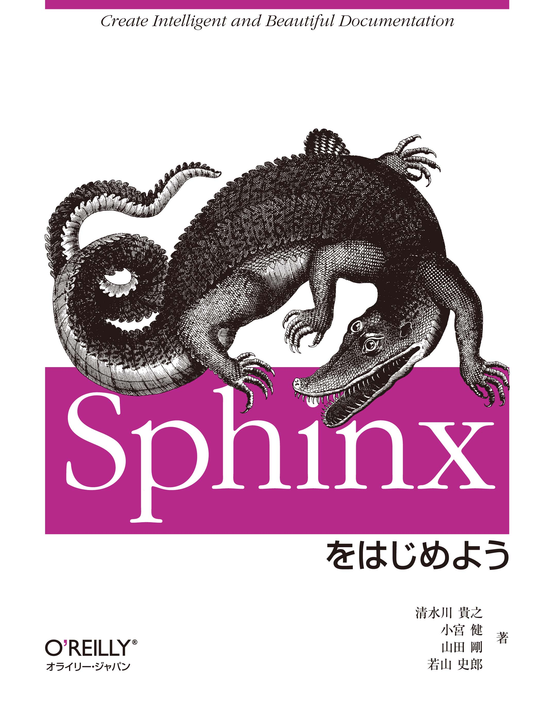
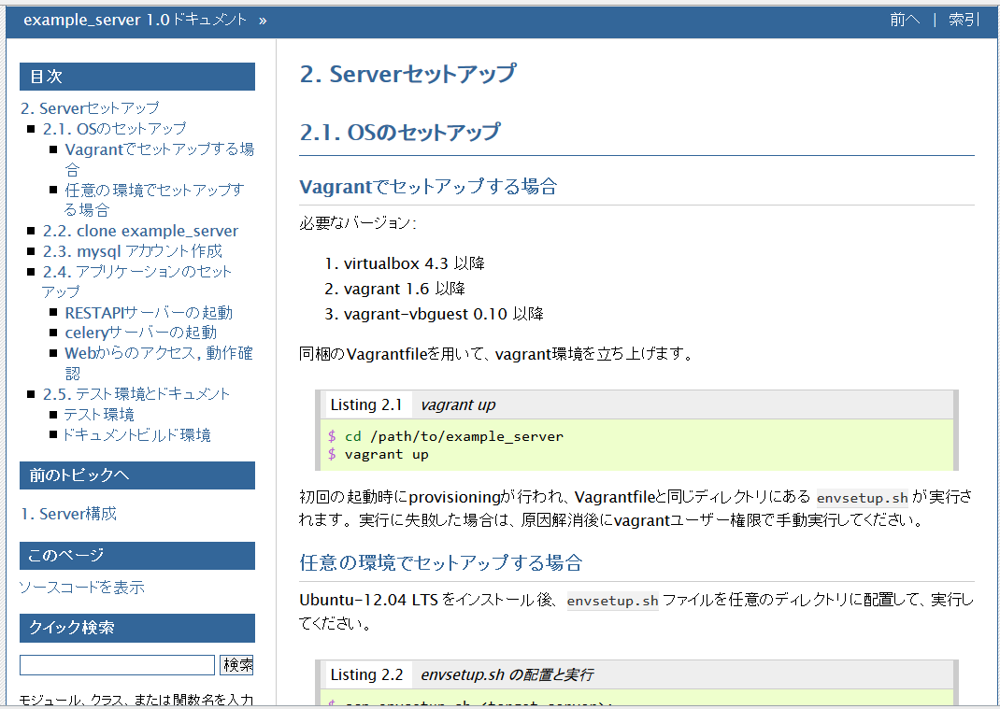

Welcome to Sphinx-1.3¶
おまえだれよ¶

@shimizukawa
- Sphinxの共同メンテナ (2011-)
- Sphinx-Users JP 2014 副会長/会計
- 共著書・共訳書
- Sphinxをはじめよう (2013)
- Pythonプロフェッショナルプログラミング (2012)
- エキスパートPythonプログラミング (2010)



Sphinx-1.3リリース¶
Sphinx-1.3b1 リリース¶
- 2014/10/10 (JST) リリース
- 1.2リリースから10か月
- 11個 の 非互換性
- 35個 の 新機能
- 27個 の バグ修正
Sphinx-1.3サポートバージョン¶
- Python:
- 2.6, 2.7, 3.3, 3.4
- サポート終了: 2.5, 3.1, 3.2
- Docutils:
- 0.10 - 0.12
- サポート終了: 0.7, 0.8, 0.9
互換性の無い変更(抜粋)¶
<tt>タグを<code>タグに変更templates_pathはビルド対象から除外- LaTeX出力でcode-blockを枠線で囲む
- make gettext:
- potにuidを出力せず、高速化
index用の文字列を対象外に
Sphinx-1.3 新機能（抜粋）¶
New 1: sphinx-build¶
- 並列ビルドオプション:
sphinx-build -jで並列読み込み- サポート外の拡張を使っていると無効
sphinx-buildのオプションにリストで設定を渡せる:-D key=val1,val2
New 2: sphinx-quickstart¶
- ほぼ全ての設定をコマンドオプションで指定可能
--quietオプションでWizard省略
$ sphinx-quickstart -q -p MyProj -a Ore -v 1.0 Test
Creating file sw-project/conf.py.
Creating file sw-project/index.rst.
Creating file sw-project/Makefile.
Creating file sw-project/make.bat.
Finished: An initial directory structure has been created.
New 4: 拡張¶
sphinx.ext.napoleon拡張:autodocをGoogleスタイルdocstringに対応
Sphinx style¶
:param path: The path of the file to wrap
:type path: str
:param field_storage: The :class:`FileStorage` instance to wrap
:type field_storage: FileStorage
:param temporary: Whether or not to delete the file when the File
instance is destructed
:type temporary: bool
:returns: A buffered writable file descriptor
:rtype: BufferedFileStorage
Google style¶
Args:
path (str): The path of the file to wrap
field_storage (FileStorage): The :class:`FileStorage` instance to wrap
temporary (bool): Whether or not to delete the file when the File
instance is destructed
Returns:
BufferedFileStorage: A buffered writable file descriptor
New 5: any ロール¶
- ロール無指定で良い感じに探してリンク
:ref:`link-to`を:any:`link-to`と書けるdefault-roleを使えば:any:を省略可能
これまで¶
:rst:dir:`code-block` について詳しくは、
ページ :doc:`directives` の :ref:`code-example`
を参照してください。
any利用¶
`code-block` について詳しくは、
ページ `directives` の `code-example`
を参照してください。
New 6: コードのキャプション¶
- 対象:
code-blockとliteralinclude - 追加:
:caption:オプション - 効果:
refロールでキャプションに置換
.. _zen-of-python:
.. code-block:: python
:caption: Python禅
import this
:ref:`zen-of-python` <- Python禅
New 7: numfig¶
- 対象: 画像,テーブル,コードに採番表示
- 設定: conf.pyに
numfig = True - 参照:
numrefでリンクして番号を表示
.. _zen-of-python:
.. code-block:: python
:caption: Python禅
import this
:numref:`zen-of-python` <- Listing 1
New 8: literalinclude¶
dedentオプションで行頭の空白除去:lines:で一部の行指定でコードを表示しても、行頭の空白を維持していた
lineno-matchオプションで行番号を維持して表示:lines:で一部の行指定でコードを表示すると、行番号を1から表示していた
diffオプションで差分表示.. literalinclude:: example.py :diff: example.py.orig
New 9: bizstyle HTMLテーマ¶
bizstyleテーマを内蔵
New 10: 多言語¶
- 14言語でステミングサポート
- 単語の三人称単数や複数形等を正規化
- 英語は対応されていた、日本語は無関係
*.po更新で*.moを自動的にビルド- conf.py の
gettext_enablesオプション追加- indexも翻訳対象にしたい場合に使用
gettext_enables = ['index']
New 11: 開発者向け¶
app.add_latex_package()API追加- LaTeX出力を調整する拡張を作りやすくなる
- 例外発生時にデバッグ情報出力を強化
- 拡張のバージョンをログ出力
- 拡張側でも対応が必要
app.set_translator()API追加- ビルダー実装を差し替え
バグ修正(抜粋)¶
- C++ ドメインが書き直され多くのバグが修正
- singlehtmlでセクション番号が壊れる問題を修正
make.bat latexpdf実行でディレクトリが変わる問題を修正
他、全部で 27個 のバグ修正
インストール方法¶
pipではbeta版インストールには
--preオプションが必要です。$ pip install --pre sphinxWindowsインストーラもあるよ
開発に貢献してくれた日本人¶
- 小宮健(@tk0miya):
- code-blockのキャプション, numfig, app.add_latex_package(), LaTeX出力でcode-blockの枠線, 10個のバグ修正
- 若山しろう(@r_rudi):
- sphinx-quickstartのコマンドラインオプション, literalincludeのdiffオプション
- 熊谷章治(@shkumagai):
- bizstyle HTMLテーマ
- 渋川よしき(@shibu_jp):
- 14言語でステミングサポート
※アカウントが分かる範囲です
まとめ¶
- Sphinx-1.3b1 が出たよ
- 新機能が盛りだくさん！
- まずは使ってみてください (重要)